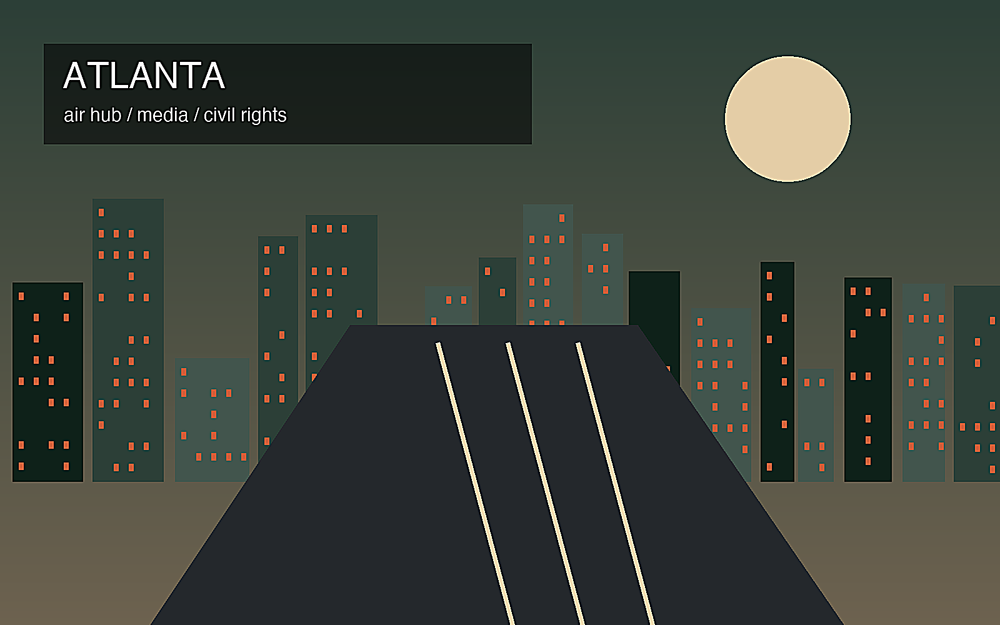

地政学
巨大空港を軸に、企業本社、物流、メディア、大学、郊外成長が広がるサンベルト都市。

🇺🇸 アメリカ合衆国 / 北米 / World City Atlas
南部の航空・物流・メディア拠点。世界都市として、経済規模だけでなく、地理、産業、宗教文化、暮らし、観光を分けて読みます。
都市の骨格
巨大空港を軸に、企業本社、物流、メディア、大学、郊外成長が広がるサンベルト都市。

巨大空港を軸に、企業本社、物流、メディア、大学、郊外成長が広がるサンベルト都市。
航空、配送、メディア制作、金融、医療、大学、企業本社が都市経済を支える。
黒人教会、公民権運動の記憶、南部プロテスタント文化、移民宗教が共存する。
公民権関連施設、音楽、映画制作、緑の多い住宅地、スポーツが都市の魅力を作る。
Geography
都市の経済力は、地図上の位置、港湾、鉄道、空港、河川、周辺都市との関係から生まれます。
巨大空港を軸に、企業本社、物流、メディア、大学、郊外成長が広がるサンベルト都市。
アトランタを単体の市街地としてではなく、周辺の住宅地、産業地、物流施設、教育機関と接続した都市圏として見ると、GDPの大きさが日々の通勤、土地利用、観光、文化施設の配置にどう表れているかが分かります。
航空、配送、メディア制作、金融、医療、大学、企業本社が都市経済を支える。
この都市では、華やかな中心業務地区の背後に、清掃、建設、配送、調理、介護、教育、保守、警備といった日常的な労働があります。都市の経済規模を見るときは、数字だけでなく、その数字を支える人と場所を同時に見る必要があります。
Industry
主力産業だけでなく、周辺の小さな仕事が都市を毎日動かしています。
Culture
宗教施設、祭礼、市場、劇場、大学、移民地区は、都市の経済とは別の時間を保存します。
黒人教会、公民権運動の記憶、南部プロテスタント文化、移民宗教が共存する。
公民権関連施設、音楽、映画制作、緑の多い住宅地、スポーツが都市の魅力を作る。